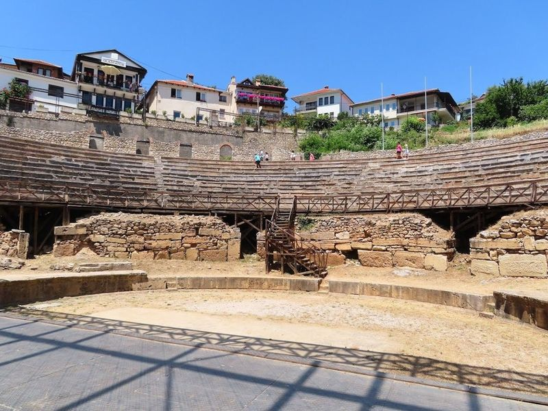
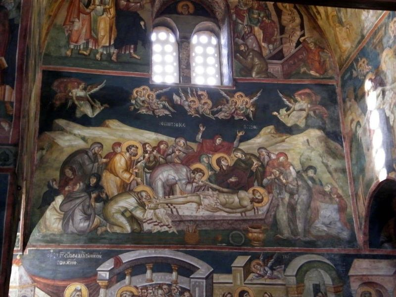
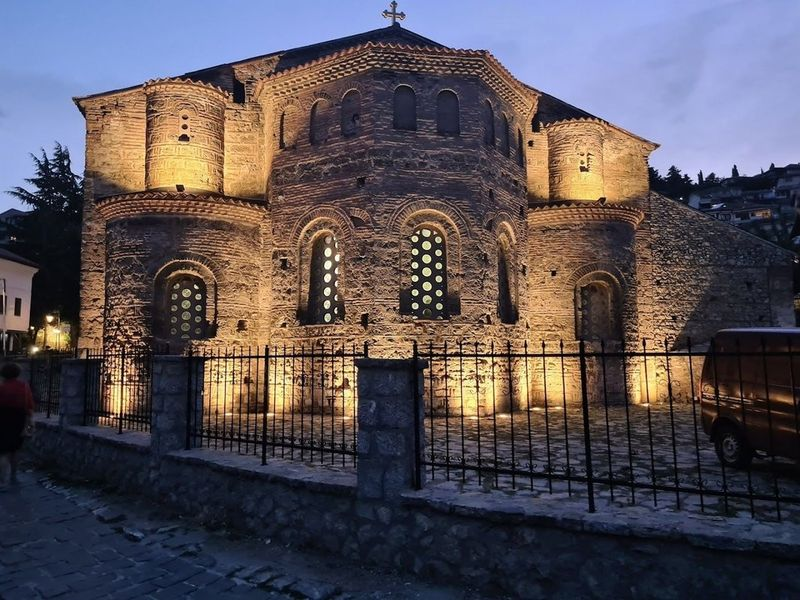
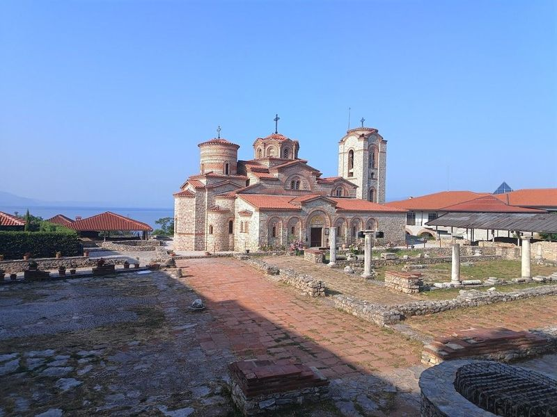
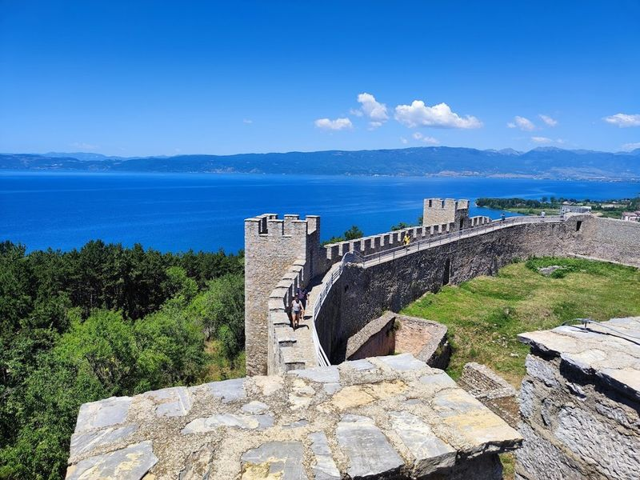
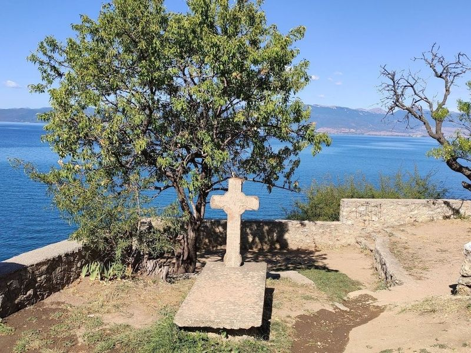
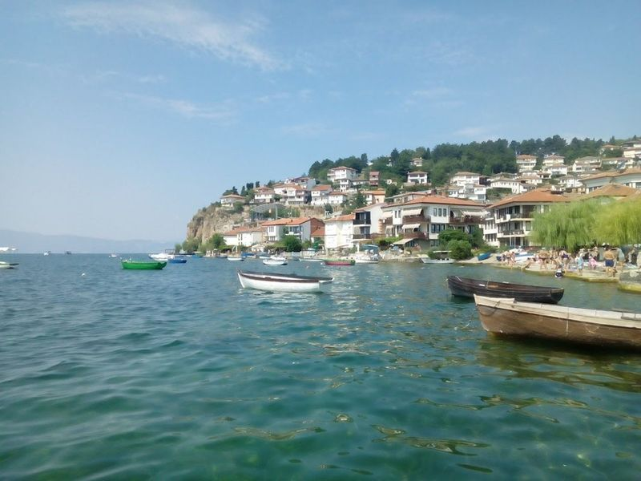
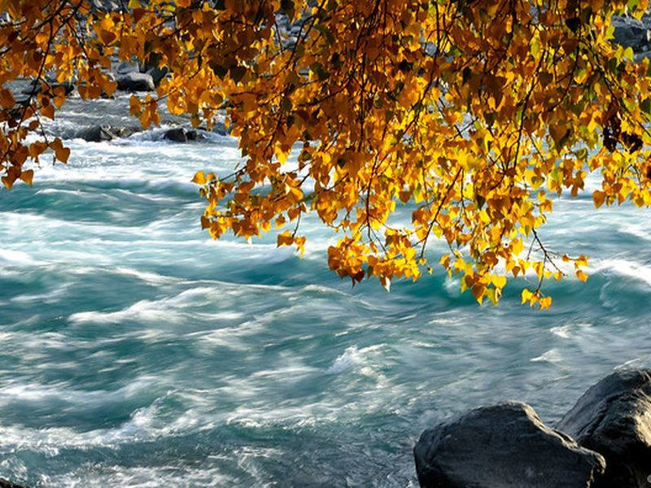
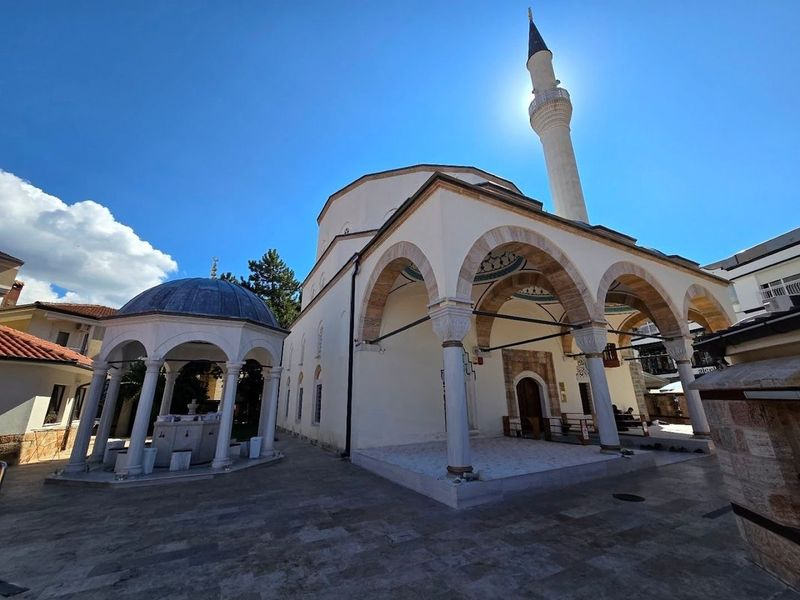
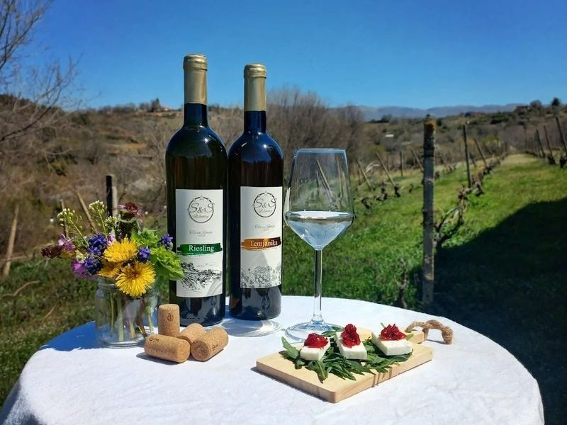

Explore Ohrid
A Brief History
Ohrid stands on a lake that early Slavic missionaries used when Clement and Naum founded schools and churches under the Bulgarian tsars in the ninth and tenth centuries. Samuel's short-lived empire made the city a rival capital before Byzantine reconquest and later Ottoman mosques and town houses filled the amphitheatre slope. Fishing, tourism, and restored frescoed churches now sustain a town whose layered sacral architecture anchors North Macedonian cultural identity.
Attractions Map
Top Sights & Activities

Ancient Macedonian Theatre of Lychnidos
The Ancient Macedonian Theatre of Ohrid, dating back to around 200 BCE, is a remarkable open-air amphitheater that offers a glimpse into the region's rich history. Unlike most ancient theaters in North Macedonia, this one hails from Greek times, making it a rare and significant structure. While exploring the well-preserved stone steps and seating, travellers can envision the historical events that once took place here.

Church of the Virgin Mary Peribleptos
The Church of Holy Mary Peryvleptos is a historic Byzantine church located in the old part of Ohrid, dating back to the 13th century. It is renowned for its elaborate wall murals depicting religious scenes, including original works by 13th-century painters from Thessaloniki. Often referred to as the Macedonian Sistine Chapel, this magnificent structure also houses a small collection of black and white photographs showcasing Ohrid during the Ottoman period.

Church of St. Sophia
The Church of Saint Sophia is a significant Macedonian Orthodox Church In Ohrid's Old Town. Dating back to the 9th century, it has undergone multiple renovations and rebuilds due to historical transitions. The church showcases centuries-old religious art and Byzantine-style architecture, making it a must-visit for history enthusiasts. Along with other notable churches in Ohrid like St. John, St.

Plaoshnik Archaeological park
Plaoshnik is an archaeological site in Ohrid, featuring a restored 9th-century church and ruins from earlier structures. The remains of an early Christian basilica, believed to date back to the 5th century, have been carefully excavated, revealing exquisite mosaic floors with depictions of exotic birds and animals. A raised walkway allows travellers to get a close-up look at this marvelous spectacle.

Samuel's Fortress
Perched atop a hill in Old Town Ohrid, Samuel's Fortress is a historic site shrouded in myth and mystery. Believed to have been built on an ancient fortress dating back to the 4th century BC, this stronghold offers panoramic views of the town, Lake Ohrid, and the surrounding mountains. Despite its current state of disrepair, travellers can explore the remaining outer wall structures, watch towers, and original gates for a glimpse into its former strategic significance.

Church of Saint Jovan the Theologian at Kaneo
This beautiful Orthodox church overlooks Lake Ohrid and is a popular tourist destination. It features beautiful Armenian and Byzantine architecture, as well as ancient frescoes. The church is open to the public, and there are picnic areas nearby where enjoy the view of the lake.

Lake Ohrid
Lake Ohrid, located on the border between Albania and Macedonia, is a large ancient lake with a depth of 300m. It holds significant historical artifacts from the Turkish rule in the 18th century, including personal seals, weapons, and items related to prominent figures like the Robev family and Hristo Uzunov. The lake is also home to a unique aquatic ecosystem with over 200 endemic species.

Chinar Tree
A historic and massive plane tree located in Ohrid, symbolizing the city’s natural beauty and longevity. The site is catalogued as a tourist attraction. Chinar Tree is listed among principal sites for Ohrid within North Macedonia. Municipal and regional heritage listings document its place in the historic centre and travellers routes through Ohrid.

Mosque of Ali Pasha
The Mosque of Ali Pasha, also known as the White Mosque, is a significant Ottoman architectural monument located in the central part of the bustling bazaar area. Built in the 16th century by Belgrade vizier Ali Pasha, this square-shaped mosque was constructed using stone and fired brick. It is believed to have originally had two minarets, although only one remains today. At one point, it also functioned as a madrasa or religious school.

S&S Winery - Ohrid
S&S Winery in Ohrid offers a Monastery Winery Tour and Wine Tasting experience that is a must-try for travellers. The local winery, run by two passionate brothers following a family tradition, provides an evening filled with delicious appetizers and excellent wines. The beautiful location and the warm hospitality of the owners make guests feel special and welcome.